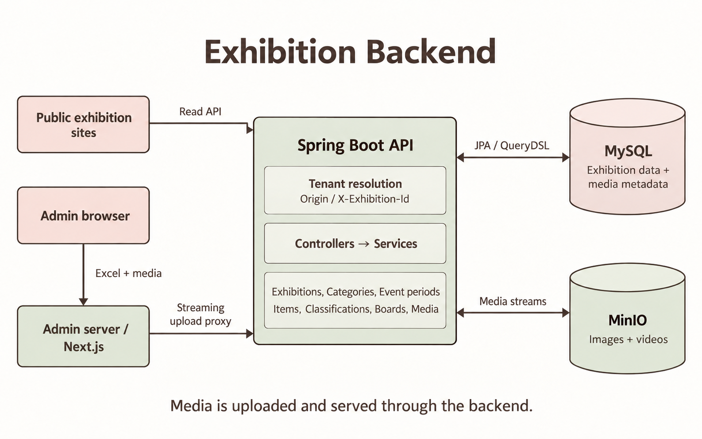

프로젝트 소개
여러 전시 사이트에서 함께 사용하는 백엔드입니다. 성균관대학교 시스템컨설턴트그룹에서 진행했고, 백엔드 구조와 API, 관리자 기능, 파일 처리 전반을 개발했습니다.
개발 동기
졸업 전시나 학과별 전시처럼 운영 주체와 도메인이 달라도 작품, 카테고리, 이미지와 영상을 관리하는 기능은 공통으로 필요했습니다. 이 기능들을 하나의 백엔드에서 제공하고, 각 전시의 데이터와 관리자 권한을 나누는 구조로 만들었습니다.
서비스 구조

Spring Boot에서 요청을 받고, 전시, 카테고리, 회차, 작품, 분류, 게시판, 미디어별로 Controller와 Service를 나눴습니다. 전시 데이터와 파일 정보는 MySQL에 저장하고, 이미지와 영상 파일은 MinIO에 저장합니다.
공개 API는 요청 도메인으로 전시를 구분합니다. 관리자 API는 X-Exhibition-Id 헤더로 전시를 선택하고, 해당 전시의 관리자인지 확인한 뒤 처리합니다.
관리자가 엑셀과 미디어를 올릴 때는 매니저 서버가 요청을 백엔드로 전달합니다. 파일을 내려받을 때도 백엔드의 미디어 API를 거치도록 했습니다.
주요 작업
- 전시별 도메인과 데이터 구분, 전시 관리자 권한 검사
- 전시, 회차, 카테고리, 작품, 분류, 게시판 API 개발
- 카카오 로그인과 JWT 인증, 작품 좋아요 기능 구현
- 엑셀 템플릿 생성과 작품 일괄 등록 기능 구현
- MinIO 파일 업로드와 미디어 스트리밍 구현
- Spring REST Docs로 API 문서를 만들고, 관리자 기능과 대량 업로드 테스트 작성
구현 과정
여러 전시의 데이터와 권한 구분
하나의 서버에서 여러 전시를 다루기 때문에 요청이 어느 전시에 속하는지 먼저 알아야 했습니다. 공개 요청은 Origin의 도메인으로 전시를 찾고, 전시 정보를 컨트롤러에 전달하도록 했습니다.
관리자는 전체 관리자와 전시별 관리자로 나눴습니다. 전체 관리자는 모든 전시를 다룰 수 있고, 전시별 관리자는 자신에게 배정된 전시만 수정할 수 있도록 검사합니다.
엑셀과 미디어를 함께 등록
작품마다 제목, 발표자 정보, 분류, 썸네일과 영상을 하나씩 입력하지 않도록 엑셀 일괄 등록 기능을 만들었습니다.
- 엑셀의 전시와 회차 정보, 필수 값, 카테고리와 분류를 확인합니다.
- 파일명과 실제 첨부 파일을 대조하고, 확장자와 파일 시그니처를 검사합니다. 사용하지 않는 첨부 파일도 확인합니다.
- 검증이 끝나면 작품과 분류를 저장하고, 미디어를 MinIO에 전송해 작품에 연결합니다.
전송이 실패하면 이미 시작한 전송이 끝날 때까지 기다린 뒤 성공한 파일을 정리합니다. 이후 DB 저장이 실패해 트랜잭션이 롤백될 때도 업로드한 파일이 정리되도록 연결했습니다.
반복 조회와 파일 전송 줄이기
한 엑셀에 같은 카테고리나 분류가 반복돼도 요청 안에서 한 번만 조회하도록 했습니다. 작품과 분류 연결은 모아서 저장하고, 같은 파일을 여러 작품이 참조하면 파일 전송은 한 번만 수행합니다.
파일 전송은 작업자 수를 제한한 풀에서 병렬로 처리합니다. DB 작업은 원래 트랜잭션 스레드에 남겨두고, MinIO로 보내는 네트워크 작업만 분리했습니다.
큰 파일을 스트리밍으로 제공
이미지뿐 아니라 발표 영상도 다뤄야 해서, 다운로드할 파일 전체를 메모리에 읽지 않도록 바꿨습니다. 먼저 MinIO에서 파일 크기와 형식을 확인하고, Spring의 Resource를 통해 파일을 스트리밍합니다. 응답에는 파일 크기와 Content-Type, 캐시 헤더를 함께 제공합니다.
장점
전시마다 도메인과 콘텐츠를 따로 관리하면서도 공통 API를 사용할 수 있습니다. 관리자 화면에서 엑셀과 미디어를 함께 등록하고, 작품 조회부터 영상 제공까지 같은 백엔드에서 처리할 수 있게 됐습니다.